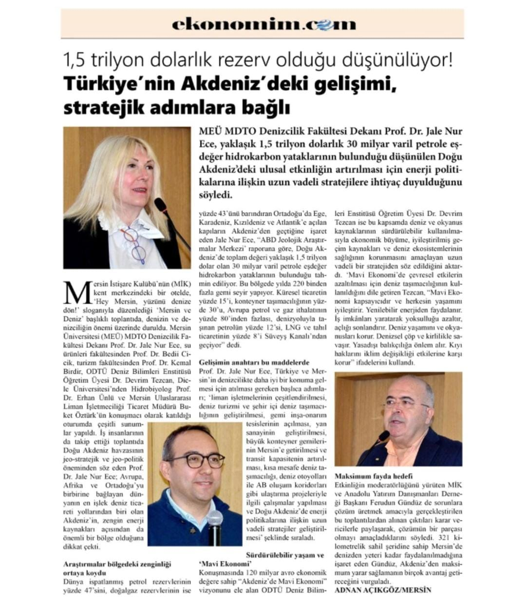

🌊 HEY MERSİN!
ARTIK YÜZÜNÜ DENİZE DÖN! 🌊
 MEÃœ MDTO Denizcilik Fakültesi Dekanı Prof. Dr. Jale Nur Ece, yaklaşık 1,5 trilyon dolarlık 30 milyar varil petrole eÅŸdeÄŸer hidrokarbon yataklarının bulunduÄŸu düşünülen DoÄŸu Akdeniz’deki ulusal etkinliÄŸin artırılması için enerji politikalarına iliÅŸkin uzun vadeli stratejilere ihtiyaç duyulduÄŸunu söyledi.
Mersin İstişare Kulübü’nün (MİK) kent merkezindeki bir otelde, ‘Hey Mersin, yüzünü denize dön!’ sloganıyla düzenlediği ‘Mersin ve Deniz’ başlıklı toplantıda, denizin ve denizciliğin önemi üzerinde duruldu. Mersin Üniversitesi (MEÜ) MDTO Denizcilik Fakültesi Dekanı Prof. Dr. Jale Nur Ece, su ürünleri fakültesinden Prof. Dr. Bedii Cicik, turizm fakültesinden Prof. Dr. Kemal Birdir, ODTÜ Deniz Bilimleri Enstitüsü Öğretim Üyesi Dr. Devrim Tezcan, Dicle Üniversitesi’nden Hidrobiyolog Prof. Dr. Erhan Ünlü ve Mersin Uluslararası Liman İşletmeciliği Ticaret Müdürü Buket Öztürk’ün konuşmacı olarak katıldığı oturumda çeşitli sunumlar yapıldı. İş insanlarının da takip ettiği toplantıda Doğu Akdeniz havzasının jeo-stratejik ve jeo-politik öneminden söz eden Prof. Dr. Jale Nur Ece; Avrupa, Afrika ve Ortadoğu’yu birbirine bağlayan dünyanın en işlek deniz ticareti yollarından biri olan Akdeniz’in, zengin enerji kaynakları açısından da önemli bir bölge olduğuna dikkat çekti.
Maksimum fayda hedefi
Etkinliğin moderatörlüğünü yürüten MİK ve Anadolu Yatırım Danışmanları Derneği Başkanı Ferudun Gündüz de sorunlara çözüm üretmek amacıyla gerçekleştirilen bu toplantılardan alınan çıktıları karar vericilerle paylaşarak, çözümün bir parçası olmayı amaçladıklarını söyledi. 321 kilometrelik sahil şeridine sahip Mersin’de denizden yeteri kadar faydalanılmadığına işaret eden Gündüz, Akdeniz’den maksimum yarar sağlamanın birçok avantaj getireceğini vurguladı.